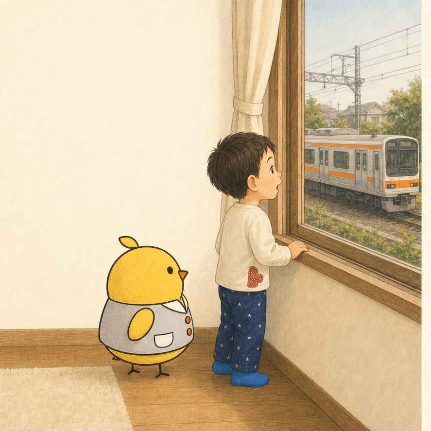
1
ぼくは 電車を 見ている。
カタン、コトン。
ずっと 見ていたい。
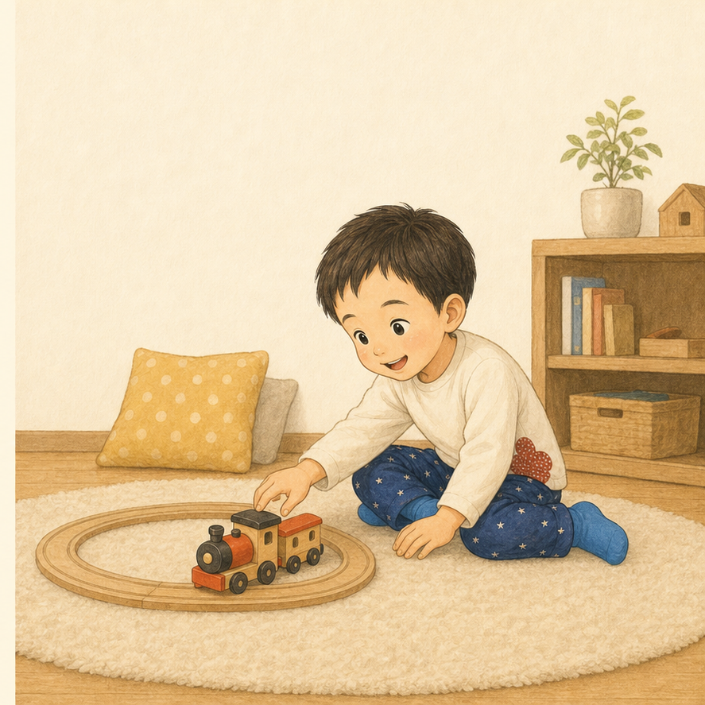
2
「こっちを 見て」
ママの こえが した。
でも、ぼくの 目は
電車を おいかけている。
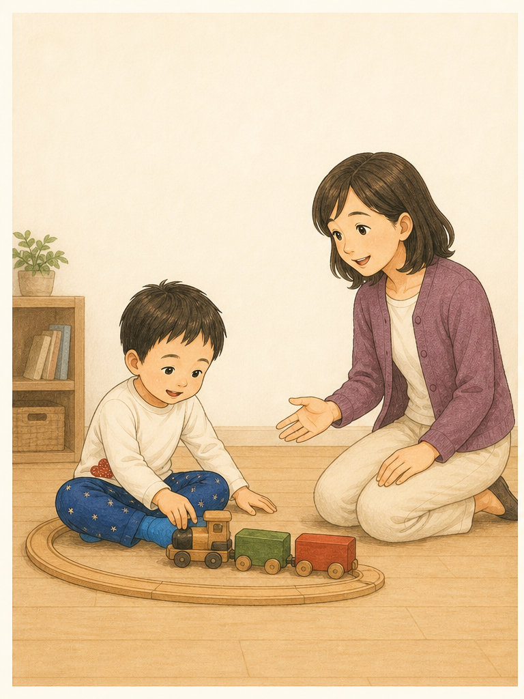
3
「目が あわないね。
ひとりで あそんでいるのかな」
ママは、ちょっと しんぱいそう。
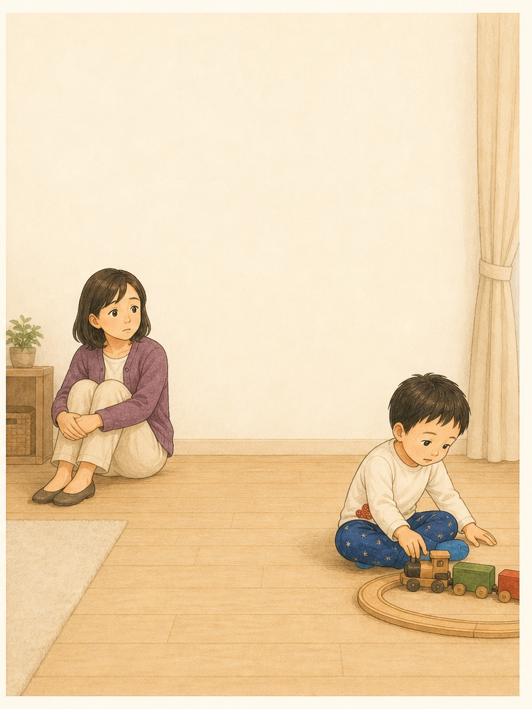
4
ひとりじゃないよ。
ママにも、この おとを
きいてほしいんだ。
カタン、コトン。
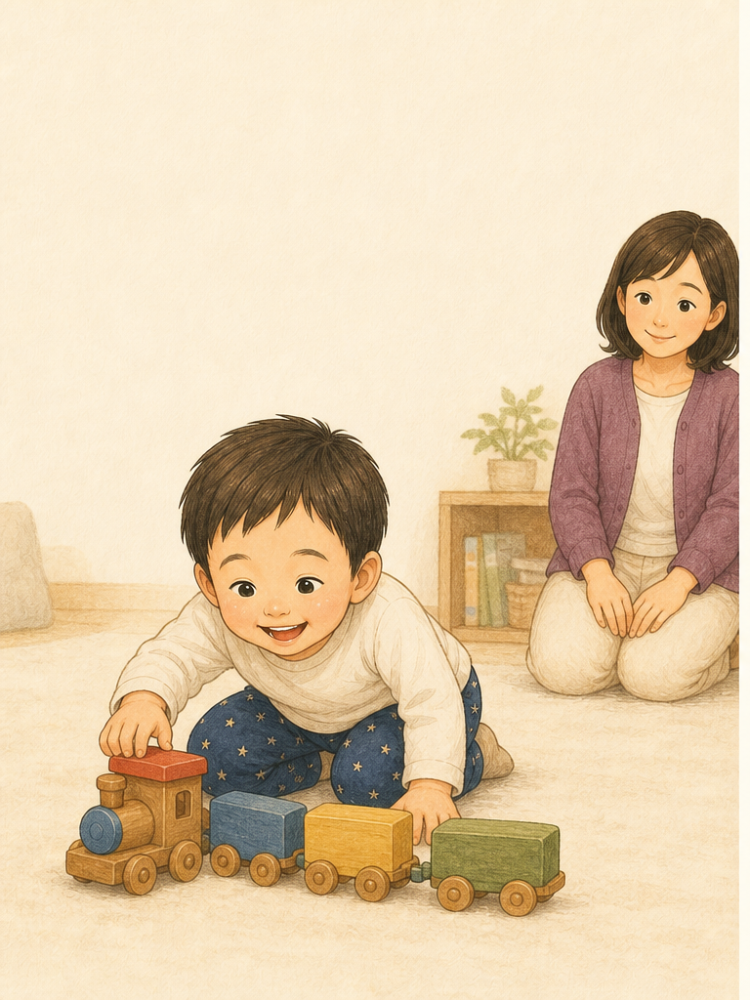
5
電車を 見て、
ママを ちらり。
また、電車を 見る。
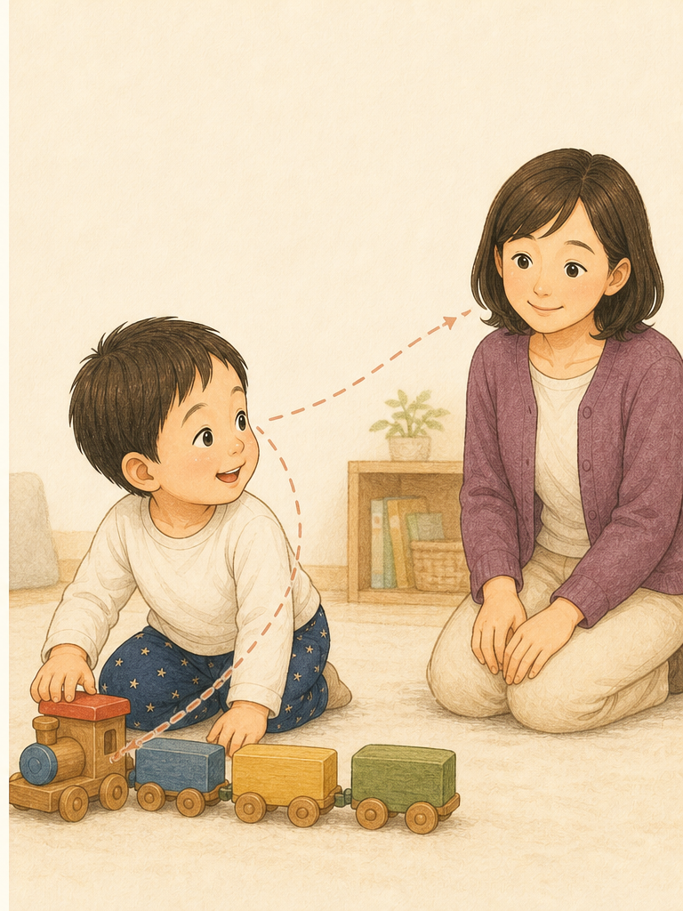
6
ことり先生が、
その 一瞬を 見つけた。
「いま、電車と ママを
こうごに 見たね。」
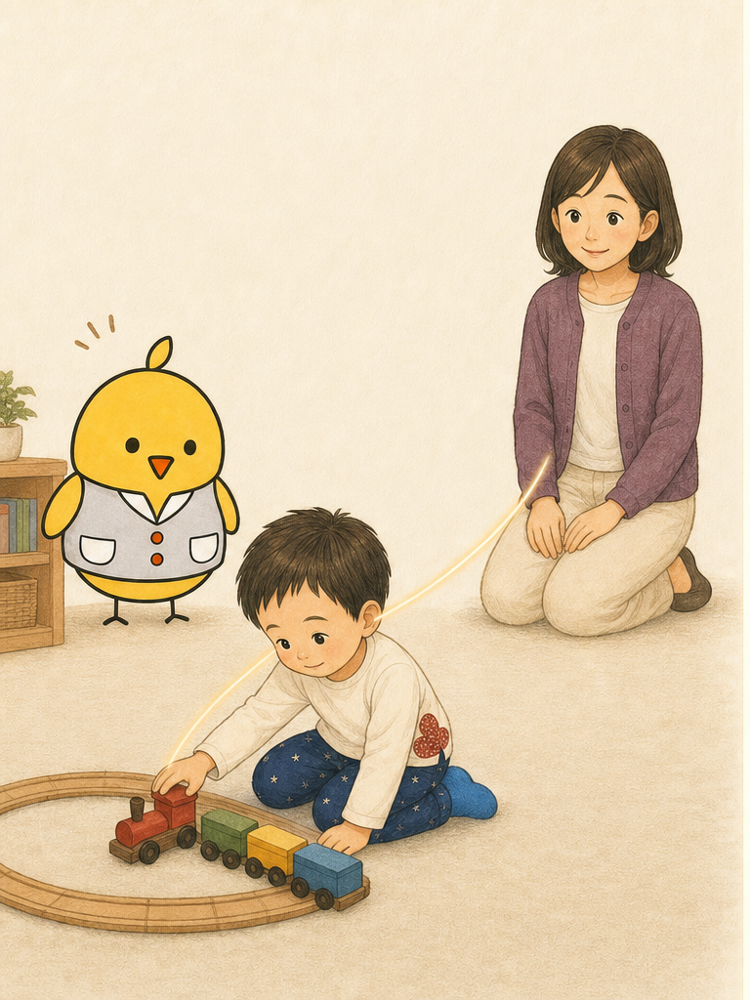
7
「顔を 見せてもらう まえに、
その子が 見ている 世界へ
はいってみよう。」
ことり先生は、ぼくの よこに すわった。
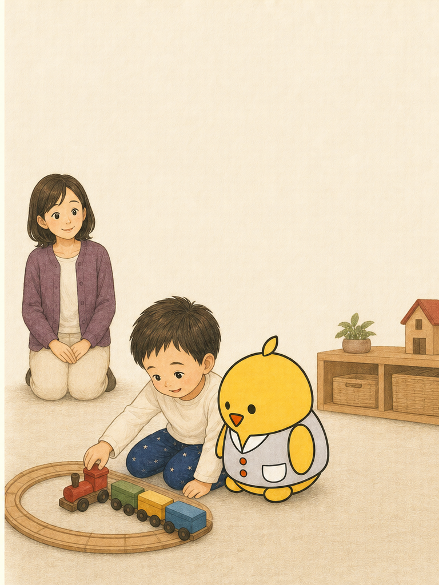
8
ママも、ぼくの よこへ。
「カタン、コトン。
はやいね」
三人の 目が、おなじ 電車を おいかけた。
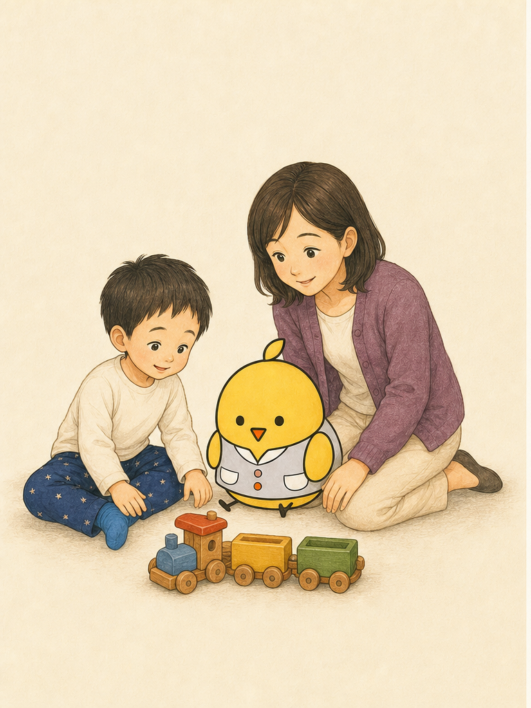
9
ぼくは 電車を
ママへ もっていった。
「これ、見て」って。
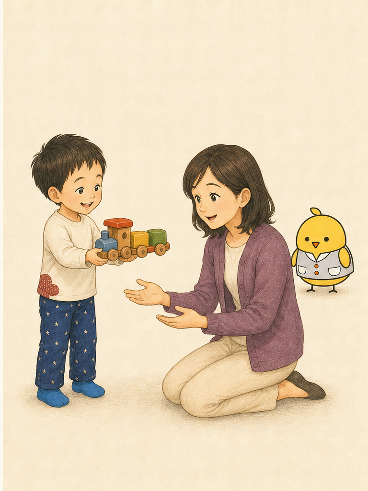
10
いっしょに 見る かたちは、
ひとつじゃない。
ちらりと 見る。こえを だす。
からだを むける。見せに いく。
どれも「いっしょに」の サイン。
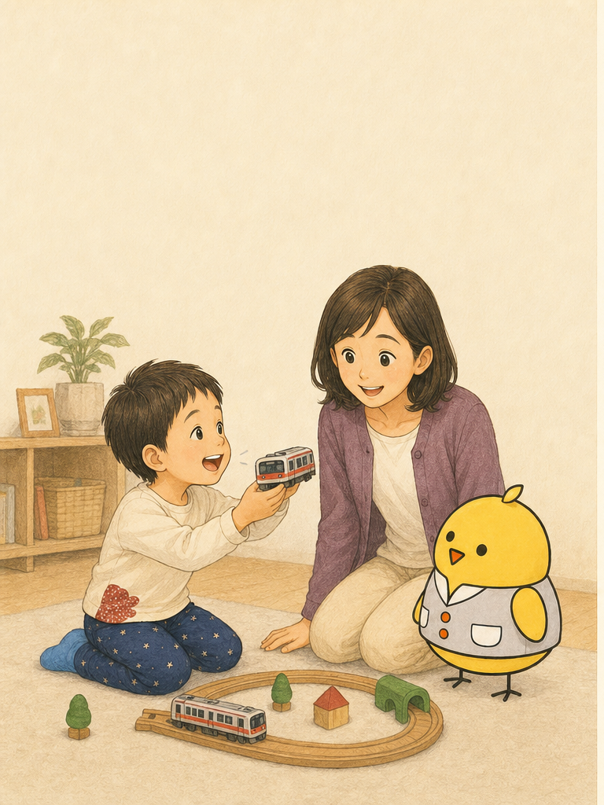
11
そのとき、まどの そとから——
ガタン、ゴトン。
ぼくの 手の さきを、
ママも ことり先生も 見た。
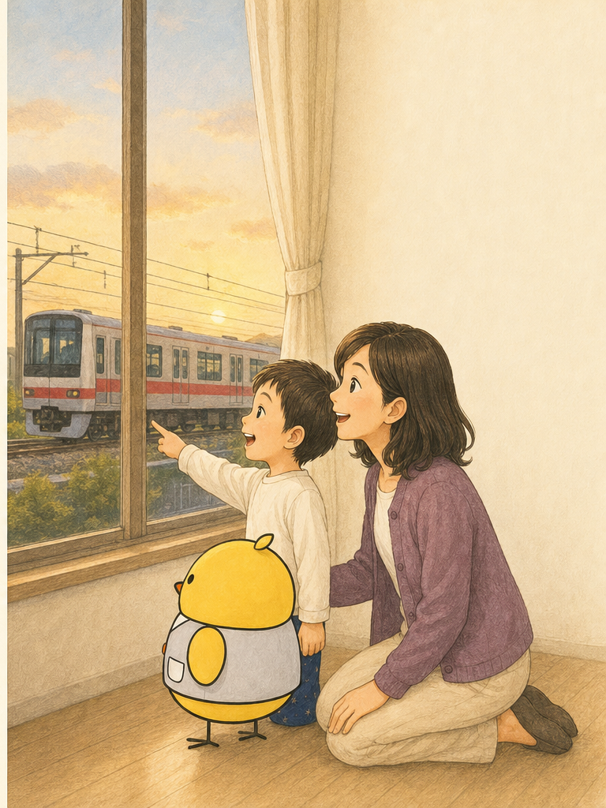
「ほら、また 来た。」
こんどは、
みんなで 見つけた。

おはなしの あとに
目を合わせる前から、
「いっしょに」は始まっています。
共同注意は、長く目を合わせることではありません。同じものに気づき、興味や気持ちを少しでも共有することです。物と人を交互に見る、身体を向ける、声を出す、見せに来ることも大切なサインです。
今日からできること
顔をこちらへ向けてもらう前に、その子が見ているものの横へ行き、短いことばを添えて一緒に見てみましょう。
発達の表れ方には個人差があります。気になることがある場合は、小児科や言語聴覚士などの専門職へご相談ください。